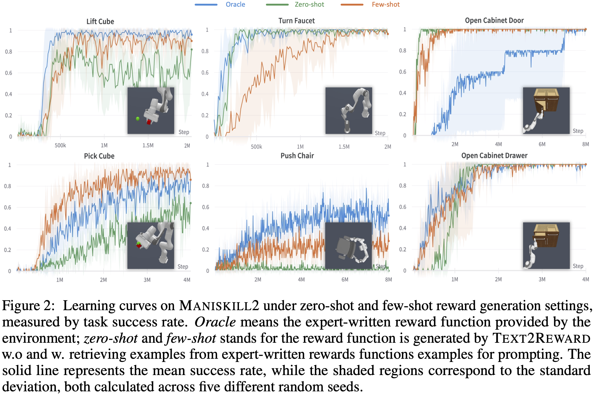

Results



Designing suitable reward functions is a longstanding challenge in reinforcement learning (RL), necessitating specialized knowledge or domain data, and entails high costs for development and collection. To address this, we introduce Text2Reward, a data-free framework that automates the generation of dense reward functions using large language models (LLMs). Given a goal described in natural language, Text2Reward utilizes LLMs to generate dense reward functions in the form of executable programs grounded in a compact representation of the environment. Different from inverse RL and recent work that use LLMs to write sparse reward codes, Text2Reward produces interpretable dense reward functions that can cover a wide range of tasks, utilizes existing software packages (e.g. NumPy), and allows iterative generation with human feedback. We show the performance of Text2Reward on two robotic manipulation benchmarks (ManiSkill2, MetaWorld) and two locomotion environments of MuJoCo. On 13 out of 16 manipulation tasks, RL policies trained with our generated reward functions achieve similar or better task success rate and convergence speed compared to policies trained on expert-written reward functions. For locomotion tasks, our method demonstrates success in learning 6 novel locomotion behaviors with a policy success rate exceeding 94%. In addition, we show that policies trained in the simulator with our method can be deployed in the real world. Finally, we further improve policies by refining their reward functions with human feedback.
@article{Text2Reward,
title={Dense Reward Generation For Robot Learning},
author={},
journal={},
year={}
}